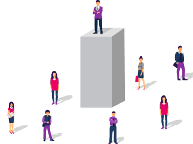
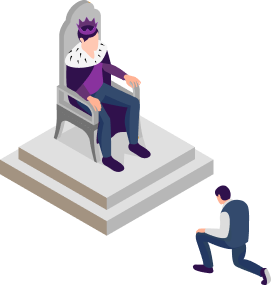
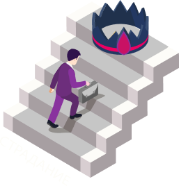
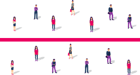
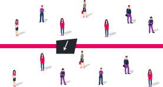
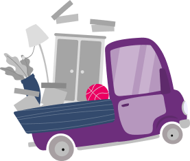

Мы переходим
к следующему этапу.
Казалось бы, мы только что говорили про самооценку и хочется обсудить ее до конца, и тем не менее
мы переходим к Норме.
Почему?
Потому что это две стороны одной медали
Люди делятся на два типа: те, у кого больше проблем с самооценкой (они ощущают себя как бы хуже других), и те, у кого проблемы с нормой (в глубине души такие люди ощущают себя лучше других).
Более того, люди, у которых есть проблемы с нормой, чувствуют, что они тем самым
доставляют боль людям вокруг себя.
Именно поэтому, если вы,
прорабатывая норму или самооценку,
посмотрите глубину, вы очень часто выйдите из нормы в самооценку, из самооценки в норму.
И можно ходить из этих двух понятий туда-сюда.
Если вы, когда мы говорили про самооценку, чувствовали, что это про вас, вам откликалось, вы действительно не можете ощущать себя классным, и фраза
«я ощущаю себя классным»
доставляет вам дискомфорт или боль —
прорабатывайте самооценку.
Норму воспринимайте пока что для общей информации.
Если про самооценку вам совершенно никак не зашло, то информация про норму у вас очень сильно отзовется, уверяю вас.
Вы почувствуете, что это то, что вам было необходимо всегда, и сейчас эта информация станет для вас огромным инсайтом.

Но начнем по порядку.
Что это вообще такое — уровень нормы?
У каждого из нас есть определенный доход, определенные
отношения с близкими, и это все кажется нам нормальным.
У нас есть какой-то бизнес или работа. Иметь работу или
иметь бизнес (в зависимости от того, что есть в нашей
реальности) является для нас нормальным.
Причем сколько существует людей,
столько существует норм.
И бомж, который лежит на свалке, считает нормальным именно такое.
И олигарх, который получает миллионы долларов, он тоже считает нормальной такую реальность.
Можно представить
уровни нормы в виде лестницы.
И людям с разных ступенек кажется, что то, где они сейчас –
это нормально.
Кажется, что люди, которые ниже моей ступеньки —
они бедные, они страдают.
Люди, которые выше —
фактически какие-то боги.
Они практически небожители, они какие-то ненормальные люди, и даже верится с трудом, что существуют в реальности люди, которые получают такие деньги.
При этом, когда вы поднимаетесь на ступеньку, например, когда доход растет —
это случается тогда, когда новый уровень дохода кажется нормальным.
Проследите, наверняка это было в вашей жизни.
Пока этот уровень дохода кажется потрясающе классным, невероятным, кажется, что я просто весь мир куплю вот на эти деньги —
этот уровень дохода не случается.
Но как только через жизнь, какие-то обстоятельства, тренинги или проработки новый уровень дохода становится нормальным —
он приходит.
Возможно, уже на 2-ом уровне вы проработали свой доход, и сейчас он уже кажется вам нормальным. —
Возможно, вы даже не заметили изменений — с нашими пользователями часто такое случается, что, например,
они в течение года что-то прорабатывают и не подмечают своих результатов.
Мы не видим, что поменялось, потому что те результаты,
которые мы получаем от проработок,
становятся супер нормальными для нас.
Мы для этого с вами и работаем.
Мы для этого изучали целый уровень,
который называется «Сопротивление»,
чтобы результаты были нормальными, чтобы реальность никак не подвергалась сомнению.
Люди начинают вспоминать, что поменялось в их жизни за год, и оказывается, что произошли очень весомые классные изменения, а они их просто не заметили.
Кстати, друзья,
рекомендую вам сделать это прямо сейчас.
Посмотрите вашу идеальную неделю. Пересмотрите то, что вы писали буквально недавно, когда вы занимались на 1-ом уровне
«Смена парадигмы».
Пересмотрите, что вы прописывали. Многое из этого уже сейчас покажется вам настолько более реальным, чем тогда, когда вы это писали, что вы удивитесь изменениям, которые произошли.
И эти изменения стали для вас нормальными.
Но когда вы их писали, вы прописывали вашу идеальную неделю,
и это казалось абсолютно нереальным.
Норма —
про то, что разные числительные могут быть для нас реальными или нереальными.
Простая математика: если 30 000 рублей в месяц для нас это реальность; это то, сколько получают большинство людей в нашем окружении; это норма нашей жизни — то, конечно, мы будем получать примерно такие деньги.
Если мы будем получать бОльшие деньги, при этом ничего с собой не делая, никак не меняя окружение и не работая никак со своей головой,
то нас начнет немного ломать, потому что мы существа социальные и нам тяжело выбиваться из определенной нормы.
Поэтому богатые обычно общаются с богатыми, бедные общаются с бедными. На самом деле люди так не делятся, но тем не менее люди, которые имеют схожие уровни нормы, обычно общаются друг с другом.
И если вам удастся попасть в среду, где норма людей отличается от вашей,
это очень быстро вас вырастит.
Каждый день вы будете видеть совершенно другую норму.
Допустим, для вас было нереально потратить 1 500 рублей на обед, и вдруг вы начинаете общаться с людьми, для которых абсолютно нормально потратить на обед 10 000. Конечно, вам будет очень тяжело, ,
вас будет ломать, будет невероятное нервное напряжение.
Но вы очень быстро себя вырастите до новой нормы, если почувствуете, что эти люди вполне реальны, они из плоти и крови.
В Master Kit мы с вами не будем так жестоко это проходить.
Мы будем это прорабатывать,
чтобы не приходилось повышать норму через жизнь. Делать это через жизнь не всегда удобно.

Обычно, чтобы поменять свою норму через жизнь без Master Kit,
нужно поменять свое окружение.
Переехать в другой город, а желательно даже страну. Возможно не общаться со своей семьей какое-то время, потому что семья —
это наш источник нормы, источник того, что для нас реально и нормально.
Если мы хотим поменять норму без работы над собой, без Master Kit, может возникнуть много таких неприятных моментов, которые необходимо сделать.
И норма, и самооценка прорабатываются не быстро, именно потому что это работа не столько с подсознанием, сколько с нашим сознательным уровнем. Это работа с нашими сознательными представлениями о том, что такое реально, а что нет. Тем не менее эти проработки имеют накопительный эффект,
если мы их долго прорабатываем.
Это не значит, что вы 10 лет будете прорабатывать норму. Самое большее, сколько вам потребуется на этот уровень — 3−4 месяца, может быть 5.
Насладитесь как следует этим уровнем. Это уровень целей нового масштаба, которые вдруг начинают легко помещаться в нашу голову. И это очень интересный подход к жизни, когда ты сам можешь решать, что реально для тебя, что нереально, какие суммы реальны, какие нет. Здесь начинаешь понимать, как делать цель меньше не в числительных,
но в ощущениях.
И если вам отзывается это видео, в следующем шаге мы будем детально разбирать,
как повышать норму при помощи тренажера Master Kit «Норма».